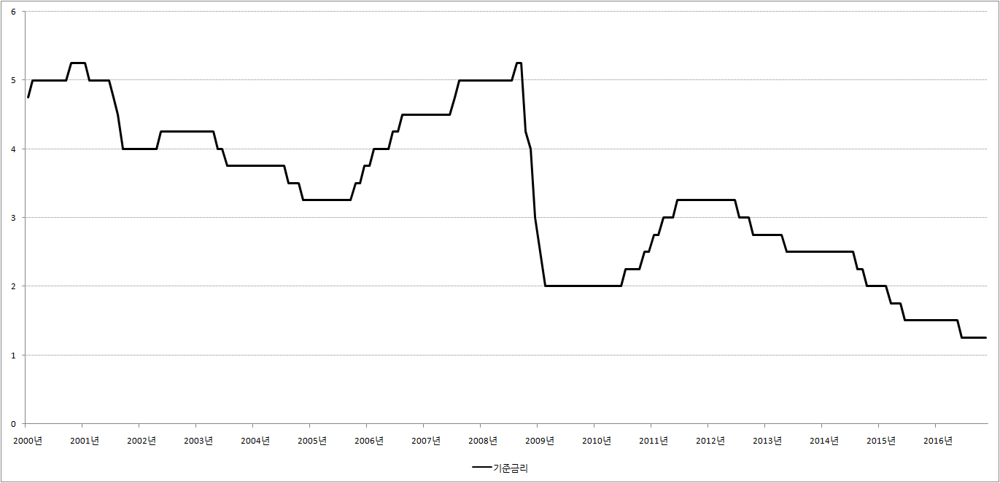

■ 한은 기준금리란?
1.한은 기준금리
한은 기준금리란 한국은행이 시중의 일반은행과 돈을 거래할 때의 금리를 말 합니다. 그런데 한국은행은 일반은행과 돈 거래를 할 때 현금 박치기를 하지 않습니다. 거의 대부분 담보로 잡고 돈을 거래합니다. 물론 그렇다고 우리처럼 땅이나 건물을 담보로 잡는 것은 아닙니다. 주로 국채를 담보로 잡고 돈을 거래 합니다.
예를 들어 시중에 돌아다니는 돈의 양을 증가시키고 싶다면 시중은행이 가지고 있는 국채를 담보로 잡고 돈을 빌려줍니다. 이때 시중은행이 돈을 많이 빌려가면 갈수록 시중에 돌아다니는 돈의 양이 증가하게 됩니다.
이와 반대로 시중에 돌아다니는 돈의 양을 줄이고 싶다면 한국은행이 가지고 있는 국채를 담보로 잡히고 일반은행한테 돈을 빌리는 형식을 취합니다. 이때 한국은행이 시중은행한테 돈을 많이 빌리면 빌릴수록 시중에 돌아다니는 돈의 양이 줄어들게 됩니다.
기준금리 인하
지금 현재 대한민국 경제가 죽을 쑤고 있다고 합시다. 그리고 은행들끼리 돈을 빌릴 때의 금리가 10%라고 합시다. 은행들끼리 돈을 빌릴 때의 금리가 10%라면 일반 시민들에게 돈을 빌려줄 때의 금리는 13%정도가 됩니다. 이웃은행에게 10%의 금리를 주고 돈을 빌렸으니 약간의 이익을 더해서 13%정도의 금리로 빌려주는 것입니다.
이런 상황에서 경제를 살리고 싶다면 한국은행은 무엇을 해야 할까요? 가장 확실한 방벙은 대출금리를 인하시키는 것입니다. 대출금리가 낮아지면 소비와 투자가 증가해 경제가 좋아질 수 있기 때문입니다. 그래서 한국은행은 일반은행과 돈을 거래할 때의 금리, 즉 기준금리를 낮춥니다.
예를 들어 기준금리를 1%로 낮추면 어떤 일이 일어날까요? 기준금리를 1%로 낮춘다는 것은 일반은행이 갖고 있는 국채를 한국은행에 담보로 잡히면 1% 금리만 주고 돈을 빌릴 수 있다는 이야기가 됩니다. 따라서 돈이 필요한 은행은 이웃은행에게 10%의 금리를 주고 돈을 빌리는 것이 아니라 한국은행에 국채를 담보로 잡히고 돈을 빌립니다. 이렇게 해서 돈이 은행권으로 풀려나가면 은행권에 돈이 흘러넘치고, 결국 은행들끼로 돈을 빌릴 때의 금리도 1%로 낮아지게 됩니다. 이렇게 해서 은행들끼리 돈을 빌리 때의 금리가 낮아지면 일반시민들에게 대출할 때의 금리도 점점 낮아지게 됩니다.
기준금리 인상
지금 현재 대한민국 경제가 펄펄 날아다닌다고 합시다. 그리고 은행권들끼리 돈을 빌릴 때의 금리가 1%라고 합니다. 은행들끼리 돈을 빌릴 때의 금리가 1%라면 일반시민에게 돈을 빌려줄 때의 금리는 3%정도가 됩니다.
경제가 펄펄 날아다니는 것은 좋은 일이지만 경제가 너무 잘나가면 물가가 상승하는 등 여러 가지 문제가 발생할 수 있습니다. 따라서 경제가 너무 잘나가면 한국은행은 경제를 진정시키기 위해 노력합니다. 그렇다면 경제를 진정시키기 위해서 한국은행은 무엇을 해야 할까요?
가장 확실한 방법은 대출금리를 인상시키는 것입니다. 대출금리가 높아지면 소비와 투자가 감소해 경제가 질주를 멈추고 숨을 고를수 있기 때문입니다. 그래서 한국은행은 일반은행과 돈을 거래할 때의 금리, 즉 기준금리를 높입니다. 그리고 나서 시중은행에 전화를 넣습니다.
‘내한테 돈 좀 빌려주라. 금리는 10%줄께, 그리고 세상 일은 모르니까 내가 가지고 있는 국채를 담보로 잡힐께’
이렇게 한국은행이 전화를 넣으면 일반 시중은행은 ‘아싸!’를 외칩니다. 이웃은행에 돈을 빌려주면 1%의 금리밖에 못 받지만 한국은행에 돈을 빌려주면 10%의 금리를 받을 수 있기 때문입니다. 더군다나 한국은행이 돈을 떼먹고 야반도주를 해도 국채를 담보로 받았으니 걱정할 필요가 없습니다. 겉으로는 한국은행에 돈을 빌려주는 것 같지만, 따지고 보면 대한민국에서 가장 안전한 은행인 한국은행에 예금을 하는 것과 같습니다. 따라서 여윳돈이 있는 시중은행은 10%의 금리를 받고 한국은행에 돈을 예금(?)합니다.
이렇게 해서 돈이 한국은행으로 흘러 들어가면 은행권에 돈이 점점 줄어들고, 결국 은행들끼로 돈을 빌릴 때의 금리도 10%로 높아지게 됩니다. 이렇게 해서 은행들끼리 돈을 빌릴 때의 금리가 높아지면 일반시민들에게 대출할 때의 금리도 높아지게 됩니다.
2.기준금리의 결정
기준금리를 결정하는 곳은 한국은행의 금융통화위원회입니다. 금융통화위원회는 한국은행 총재와 부총재를 포함해 총 7명으로 구성되어있습니다. 금융통화위원회는 매월 2째주와 4째주 목요일에 정기 모임을 갖고 기준금리뿐만 아니라 대한민국 경제의 앞날에 영향을 미치는 중요한 결정을 하고 있습니다.
3.기준금리 조회 사이트
지금 현재 기준금리가 어떻게 되는지, 그리고 과거의 추이는 어떠 했는지 궁금하다면 한국은행 통계시스템을 이용하시면 됩니다. 한국은행통계시스템에 접속하신 후 '한국은행 주요계정 및 금리 → 한국은행 기준금리 및 여수신금리'를 차례로 클릭하시면 됩니다.
일일이 클릭하는게 귀찮으시다면 여기를 즐겨찾기에 등록해 놓고 필요할 때 마다 확인하시면 됩니다.
기준금리 추이

{kind=link}